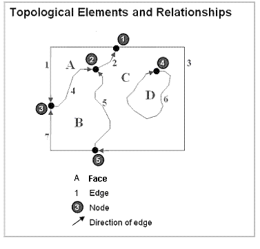

***
←
→
Objectives/TOC
- spatial DBs: definition, characteristics, need, creation..
- spatial datatypes
- spatial operators
- spatial indices
- implementations
- miscellany
What is a spatial database?
"A spatial database is a database that is optimized to store and query data related to objects in space, including points, lines and polygons."
In other words, it includes objects that have a SPATIAL location (and extent). A chief category of spatial data is geospatial data - derived from the geography of our earth.
Characteristics of geographic data:
- has location
- has size
- is auto-correlated
- scale dependent
- might be temporally dependent too
Geographic data is NOT 'business as usual'!
Entity view vs field view
In spatial data analysis, we distinguish between two conceptions
of space:
- entity view: space as an area filled with a set of discrete objects
- field view: space as an area covered with essentially continuous surfaces
For our purposes, we will adopt the 'entity' view, where space is populated by discrete objects (roads, buildings, rivers..).
Components
So a spatial DB is a collection of the following, specifically built to handle spatial data:
Soon, we will explore what types, operators and indices mean.
Examples of spatial data
CAD data:
Agricultural data:
3D data:
What can be plotted on to a map?
- crime data
- spread of disease, risk of disease [look at this too]
- drug overdoses - over time
- census data
- income distribution, home prices
- locations of Starbucks (!)
- (real-time) traffic
- agricultural land use, deforestation
Who creates/uses spatial data?

Various government agencies routinely coordinate spatial data collection and use, operating in effect, a national spatial data infrastructure (NSDI) - these include federal, state and local agencies. At the federal level, participating agencies include:
- Department of Commerce
- Bureau of the Census
- NIST
- NOAA
- Department of Defense
- Army Corps of Engineers
- Defense Mapping Agency
- Department of the Interior
- Department of Agriculture
- Agricultural Stabilization and Conservation Service
- Economic Research Service
- Forest Service
- National Agriculture Statistical Service
- Soil Conservation Service
- Department of Transportation
- Federal Highway Administration
- Environmental Protection Agency
- NASA
As you can see, spatial data is a SERIOUS resource, vital to US' national interests.
Where does spatial data come from?
Spatial data is created in a variety of ways:
- CAD: user creation
- CAD: reverse engineering
- maps: cartography (surveying, plotting)
- maps: satellite imagery
- maps: 'copter, drone imagery
- maps: driving around
- maps: walking around
What to store?
All spatial data can be described via the following entities/types:
- points/vertices/nodes
- polylines/arcs/linestrings
- polygons/regions
- pixels/raster



Points, lines, polys => models and non-spatial attrs
Once we have spatial data (points, lines, polygons), we can:
- 'model' features such as lakes, soil type, highways, buildings etc, using the geometric primitives as underlying types
- add 'extra', non-spatial attributes/features to the underlying spatial data
Look at this map, overlaid with scary data..
GIS vs SDBMS
GIS is a specific application architecture built on top of a [more general purpose] SDBMS.
GIS typically tend to be used for:
Spatial relationships
In 1D (and higher), spatial relationships can be expressed using 'intersects', 'crosses', 'within', 'touches' (these are T/F predicates).
Here is a sampling of spatial relationships in 2D:
Another diagram showing the [binary] operations:
Minimum Bounding Rectangles (MBRs) are what are used to compute the results of operations shown above:

Spatial relations - categories
Spatial relationships can be:
- topology-based [using defns of boundary, interior, exterior]
- metric-based [distance/Euclidian, angle measures]
- direction-based
- network-based [eg. shortest path]
Topological relationships could be further grouped like so:
- proximity
- overlap
- containment
How can we put these relations to use?
We can perform the following, on spatial data:
- spatial measurements: find the distance between points, find polygon area..
- spatial functions: find nearest neighbors..
- spatial predicates: test for proximity, containment..

Spatial operators, functions

This doc [from 'FME Knowledge Center'; thanks to Minaxi Singla for the link] provides more info on the spatial operators.
Oracle Spatial
Oracle offers a 'Spatial' library for spatial queries - this includes UDTs and custom functions to process them.

Postgres PostGIS
Here is an example - table creation, and polygon insertion:
To do the above, here are the steps on a PC (similar steps on a Mac):
- install Postgres (v.9.5, not 9.6 beta!)
- bring up 'Application Stack Builder' (an add-on that gets installed when Postgres v9.5 is installed), from the available installation options that come up, pick Spatial Extensions -> 'PostGIS 2.2 for Postgres 9.5', install
- bring up a shell (I use 'cygwin'); note - if you want to use cygwin, be sure to use the shell that comes up when you run cygwin.bat, *not* the 'mintty' shell that you get when you double-click on the cygwin icon; Mac users would use the built-in shell
- 9.5/bin/initdb (on a Mac the path would be different)
- 9.5/bin/pg_ctl start - this starts the Postgres server
- 9.5/bin/createdb mydb - a new db for us to create tables in
- 9.5/bin/psql.exe -d mydb -c "CREATE EXTENSION postgis;" - this adds spatial types to our db; note: 'psql' is the program that lets us communicate with the db server, via the shell
- 9.5/bin/psql.exe -d mydb -a -f county.sql - this is how you can execute SQL commands that you store in a .sql file
- edit the .sql file (eg add more data [including spatial data], create new tables, write SQL queries [including spatial ones]..), run the file (as shown above), edit, run......
- 9.5/bin/pg_ctl stop - optionally you can stop the server and restart it later
- ...
You can learn a lot about spatial queries from this page.
Creating spatial indexes
As (more so than) with non-spatial data, the creation and use of spatial indexes VASTLY speed up processing!
Can B Trees index spatial data?
In short, YES, if we pair it up with a 'z curve' indexing scheme (using a space-filling curve):
The idea is to quantize every (x,y) location into a recursively-divided 'quadtree' cell, and use the cell's binary (x,y) location to create a (binary) 'z' key, which is ordered along the unit (0..1) interval - in other words, 2D (x,y) points get mapped (indexed) to ordered 1D 'z' locations.
But, this is of academic interest mostly, not commonly practiced in industry - Apple's FoundationDB is an exception.
R trees
R trees use MBRs to create a hierarchy of bounds.
Variations, FYI: R+ tree, R* tree, Buddy trees, Packed R trees..
k-d trees, K-D-B trees
k-d tree
Alternate: K-D-B tree:
Quadtrees (and octrees)
Here we recursively and adaptively subdivide space [subdivisions happen only where necessary].

Each node is either a leaf node, with indexed points or null, or an internal (non-leaf) node that has exactly 4 children. The hierarchy of such nodes forms the quadtree.
Indexing evolution
Indexing schemes continue to evolve.
Query processing: filter, refine
Visualizing spatial data
A variety of non-spatial attrs can be mapped on to spatial data, providing an intuitive grasp of patterns, trends and abnormalities. Following are some examples.
Dot map:
Here's another one.
Proportional symbol map:
Diagram map:
Another diagram map:
Also possible to plot multivariate data this way.
Choropleth maps (plotting of a variable of interest, to cover an entire region of a map):

So who (else) has spatial extensions?
Everyone!
Thanks to SQL's facility for custom datatype ('UDT') and function creation ('functional extension'), "spatial" has been implemented for every major DB out there:
- Oracle: Locator, Spatial, SDO
- Postgres: PostGIS
- DB2: Spatial Datablade
- Informix: Geodetic Datablade
- SQL Server: Geometric and Geodetic Geography types
- MySQL: spatial library comes 'built in'
- SQLite: SpatiaLite
- ..
Google KML
Google's KML format is used to encode spatial data for Google Earth, etc. Here is a page on importing other geospatial dataset formats into Google Earth.
ESRI: Arc*
ESRI is the home of the powerful, flexible family of ArcGIS products - and they are local!
Misc/MORE
There is a variety of inexpensive/open source mapping platforms, competing with more pricey commercial offerings (from ESRI etc). Here are several:
• QGIS
• MapBox
• Carto
• GIS Cloud
Here is a neat book - read section 2.6 [and ALL else!]...